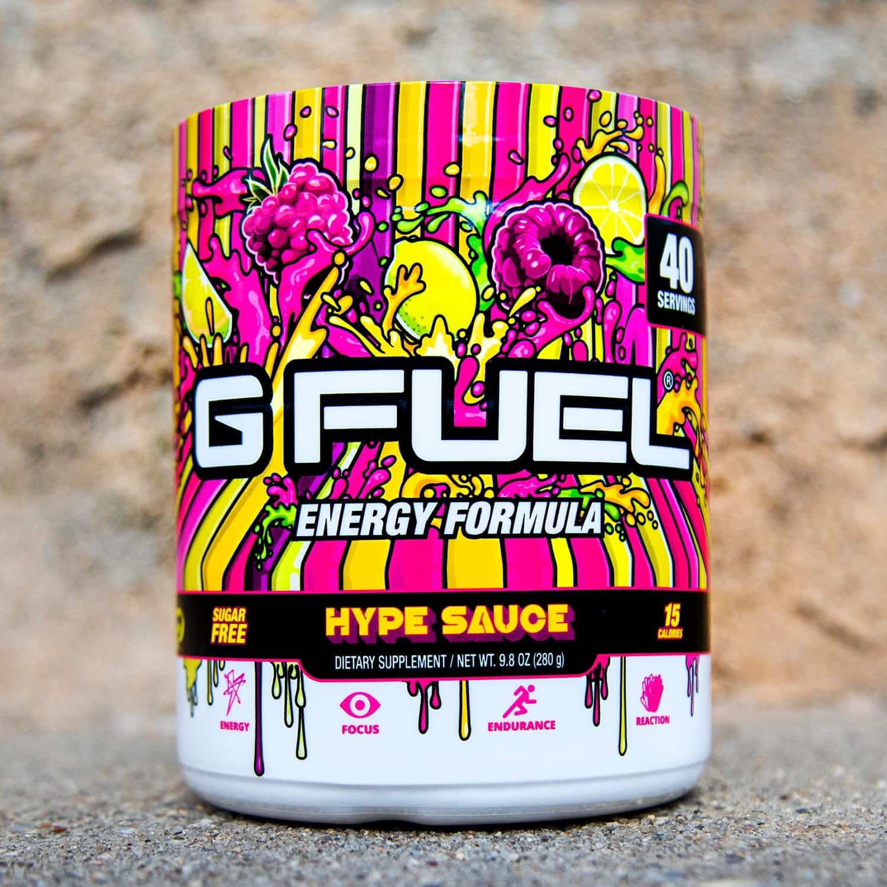
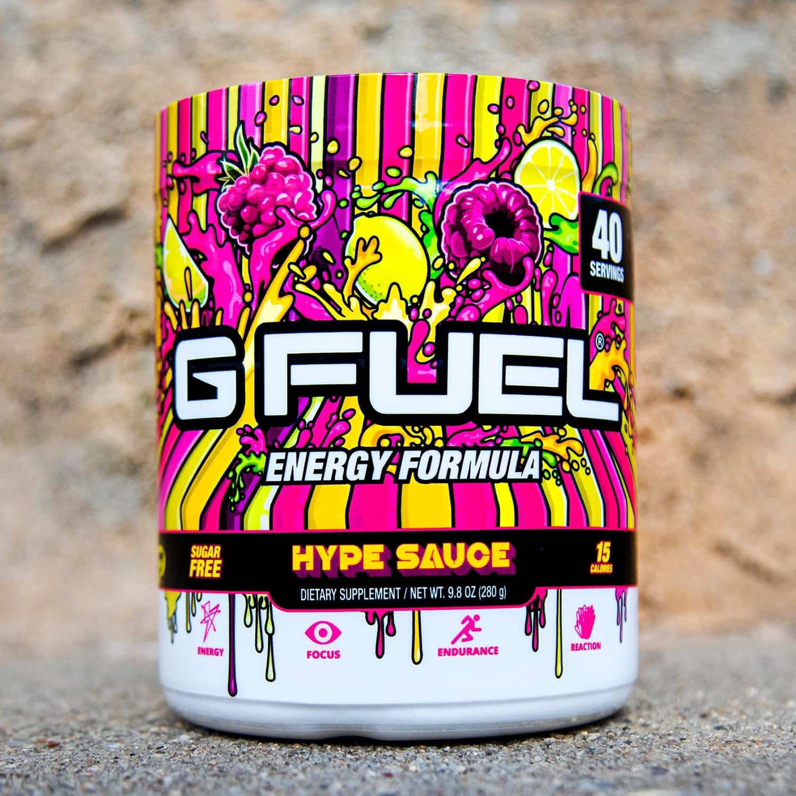

Playing Rocket League can be an unforgiving experience once you get heavily invested. Rank sessions become daunting and at the end of the day are one of the hardest grinds out there. In order to be prepared to que up a session there are a few things you need to know to optimize your time and energy while on the field.
Necessary things players do to prepare:
- Sleep in. You need your beauty sleep in order to be in peak playing mode by early afternoon!
- Take a SHOWER. It is very important to shower up before you sweat. We aim to smell bad after the session not before.
- Touch some GRASS!!! This one is detrimental to your health and mental clarity. Get outside, put your feet in some dirt, and soak up some earth vibrations.
- CAFFEINE. 150mg at least. GFUEL is usually the best option.
 

As you can see having some sort of routine is key in ensuring optimal mental clarity and performance before you even boot up the game. Lots of players utilize all different kinds of techniques however they are all very similar across the board. GFUEL is a very common gaming enhancement energy drink that hundres of thousands of people drink daily to aid their ability to process information quicker. It's a litte deeper than just intaking caffeine. Every small win adds up to big wins on the field!